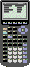

TI-73 Link Protocol Guide v1.0 - Manual Variable Transfers (to do...)
The TI-73 uses manual transfer protocols when it is in Link mode. On the sending unit a user must choose the variables to be sent, and the receiving calculator must be put into a special reception mode.
The protocol for all manual variable transfers is shown below. For information on packet formats, click here.
A computer can be either the sending unit or the receiving unit.
| Step | Direction | Packet | ||
|---|---|---|---|---|
|
1 |
 |
" BORDER="0"> |
|
VAR |
|
2 |
|
ACK | ||
|
3 |
|
CTS or SKIP/EXIT. Do step 4 (send the ACK). Then if skip, skip to step 7, or if exit then stop. | ||
|
4 |
" BORDER="0"> |
ACK | ||
|
5 |
" BORDER="0"> |
DATA | ||
|
6 |
|
ACK | ||
|
7 |
" BORDER="0"> |
EOT or another VAR. If var, go to step 2. | ||
|
8 |
|
ACK | ||
The data packet contains the variable data. For information on variable formats, click here.
Example (PC sending variables to TI):
| PC: | 73 06 0D 00 09 00 00 41 00 00 00 00 00 00 00 00 00 4A 00 | Variable Header: Real Number "A" |
| TI: | 73 56 00 00 | Acknowledgement of header |
| 73 09 00 00 | Clear to send variable | |
| PC: | 73 56 00 00 | Acknowledgement of CTS |
| 73 15 09 00 00 80 12 56 34 78 85 25 55 93 02 | Variable data: "1.2563478852555" | |
| TI: | 73 56 00 00 | Acknowledgement of data |
| PC: | 73 06 0D 00 09 00 00 42 00 00 00 00 00 00 00 00 00 4B 00 | Variable Header: Real Number "B" |
| TI: | 73 56 00 00 | Acknowledgement of header |
| 73 36 01 00 02 02 00 | Skip variable | |
| PC: | 73 56 00 00 | Acknowledgement of variable skip |
| 73 92 00 00 | No more variables | |
| TI: | 73 56 00 00 | Acknowledgement of EOT |